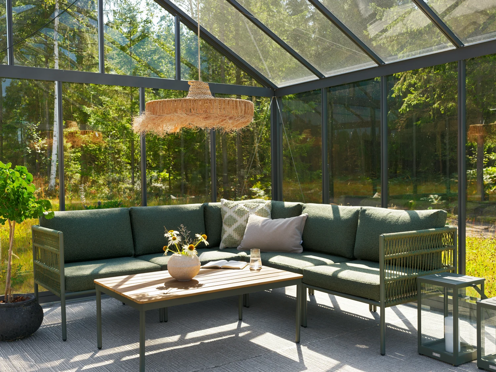
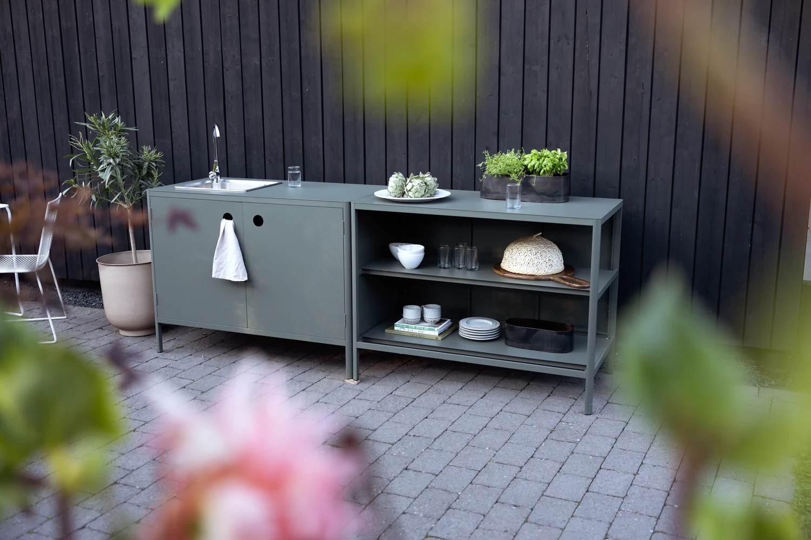
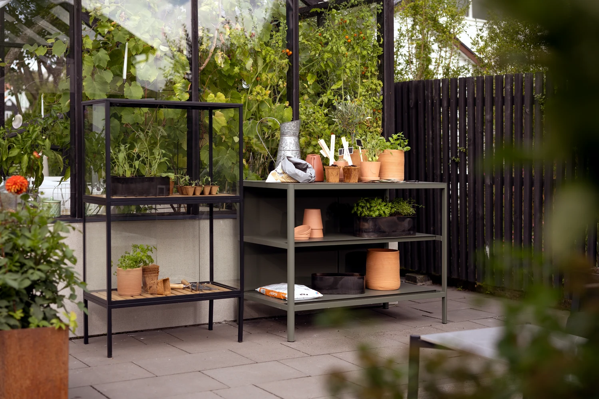
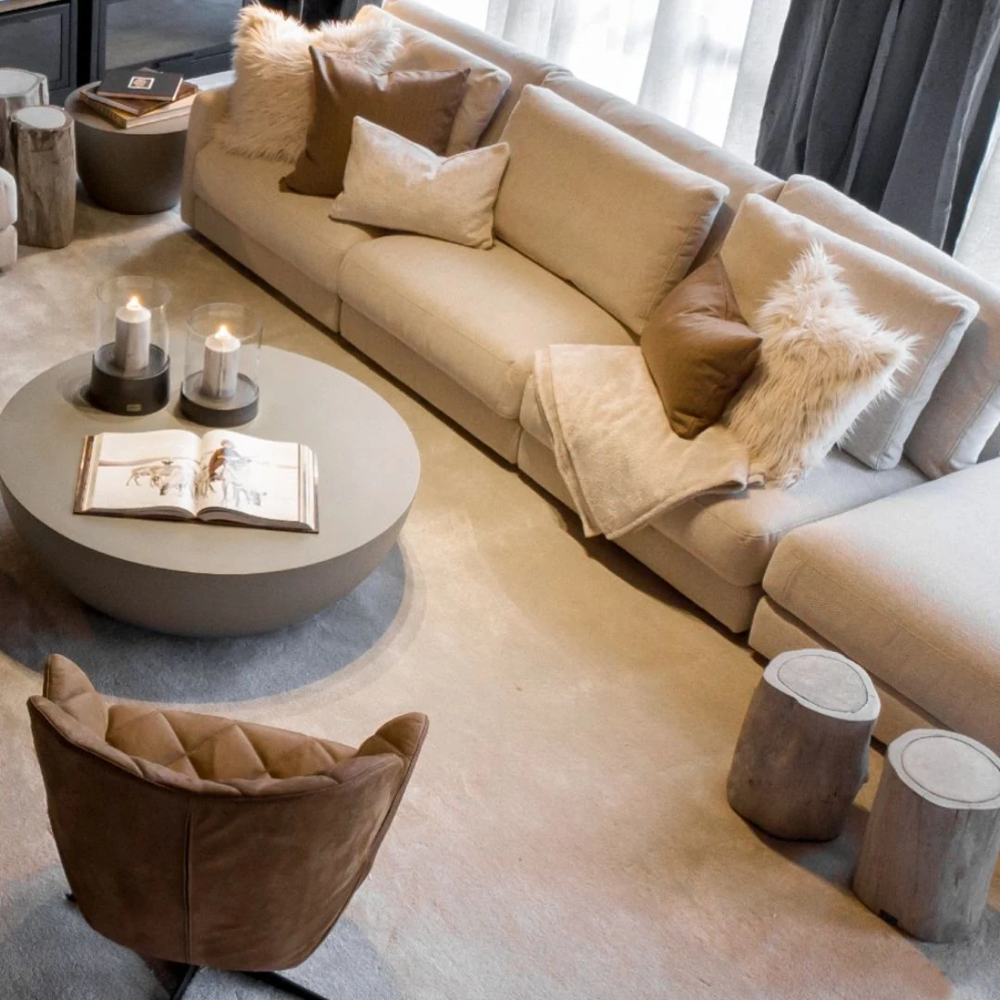

Rum för
personlighet.
Upptäck vårt urvalMöbler, material och detaljer som känns som du. Personligt utvalda i Nacka sedan 1998.
Välkommen till Zandvoort.
Värmdövägen 120 · Nacka
Ett personligt urval.
En plats att hitta hem.
Det är kombinationen
som gör ett hem.
Det du faller för direkt. Det du behåller länge. Hos oss möts möbler, textilier och detaljer som ger rummet sin egen karaktär.
Lär känna ZandvoortUtvalt för
livet omkring dig.
Färg, form och material att upptäcka. Börja med några av våra favoriter för livet ute.

Vad vill du
komma hem till?
Ta med dina idéer, dina funderingar och gärna en bild av rummet. Vi hjälper dig att hitta sambandet mellan det du redan har och det du vill lägga till.
Upptäck vår inredningshjälpBoka en konsultation med Ulrika i butiken.
“Jag uppskattade Zandvoorts professionalism, snabbhet och goda smak.”Anna Jeansson, kundomdöme om homestyling.Läs på Houzz
Kom förbi.
Känn efter själv.
Värmdövägen 120
131 57 Nacka
Tis–tor 11.00–18.00
Fre–lör 11.00–15.00
Sön–mån stängt